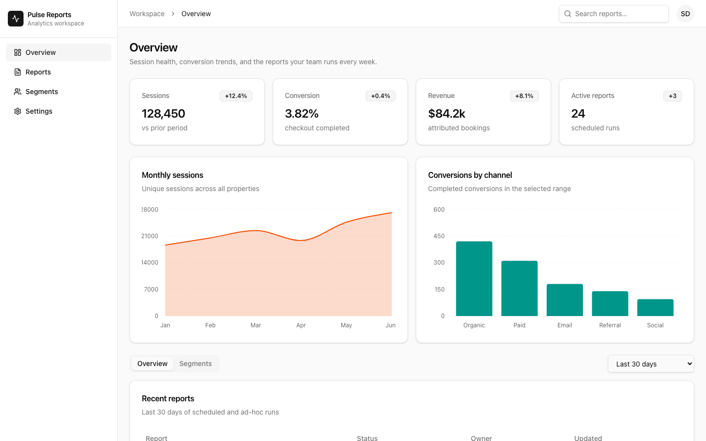
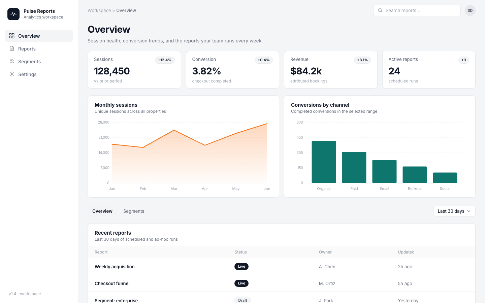

@demo/shadcn-ui
Design-system package (shadcn-shaped) + Decree contract.
Decree · demo
Design-system package, a product app built with it, and an AI rebuild from a screenshot. Same Decree contract. Different outcomes.
This page is static — open index.html in a browser (no
server). The two apps below need Vite.
From demos/shadcn/. First time: npm install
here (wires the package + both apps).
cd demos/shadcn
npm install
# Terminal 1 — app (uses @demo/shadcn-ui)
npm run dev
# opens http://127.0.0.1:5180
# Terminal 2 — AI twin (screenshot rebuild)
npm run dev:ai
# opens http://127.0.0.1:5181decree.contract.json.
evidence/.

From the Decree repo root.
node bin/decree.js prepare demos/shadcn/packages/ui
node bin/decree.js use demos/shadcn/packages/ui --force \
--out demos/shadcn/apps/app/decree.contract.json
# ensure scan.profile app + css excludes on the app contract
node bin/decree.js verify demos/shadcn/apps/app
# expect: ok
cp demos/shadcn/apps/app/decree.contract.json \
demos/shadcn/apps/app-ai/decree.contract.json
node bin/decree.js verify demos/shadcn/apps/app-ai
# expect: fail